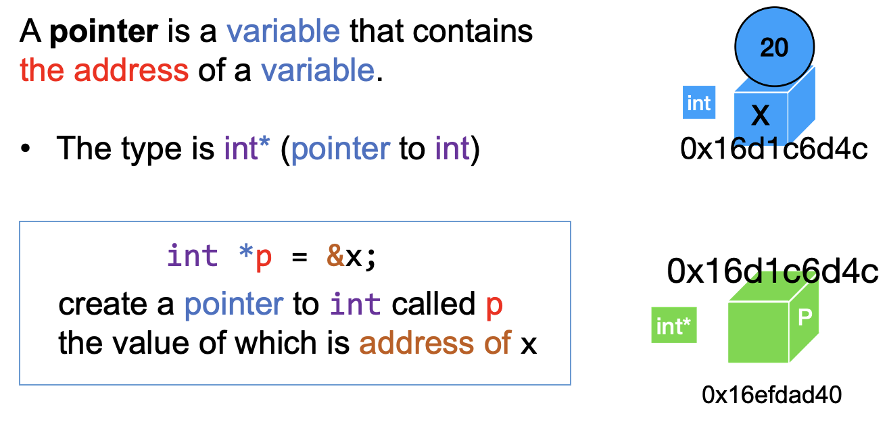
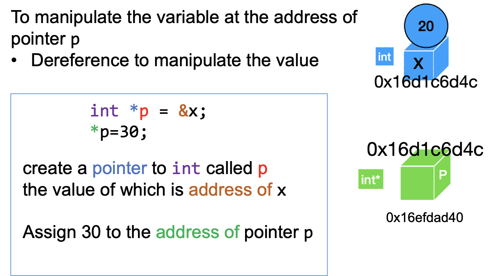
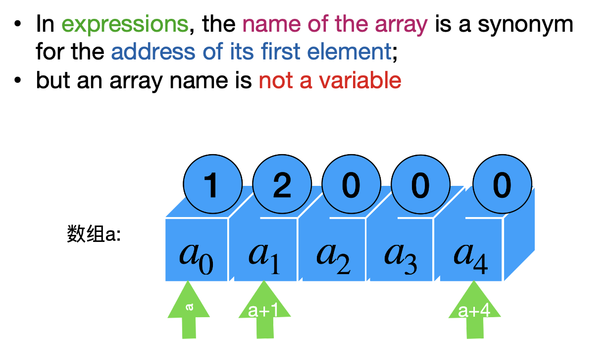
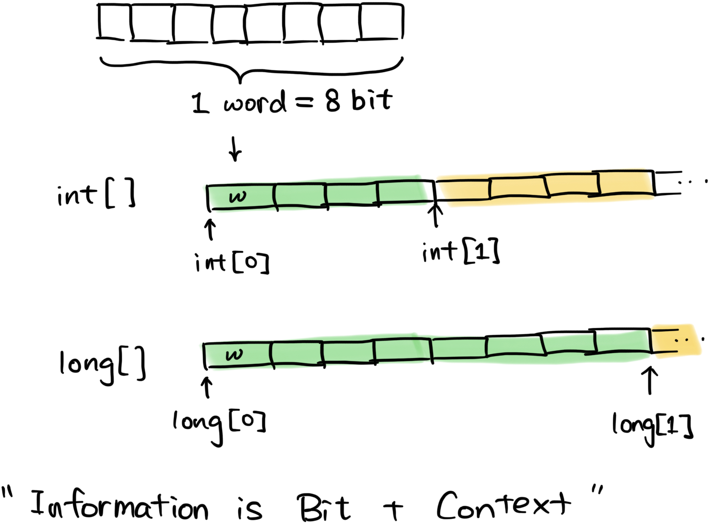
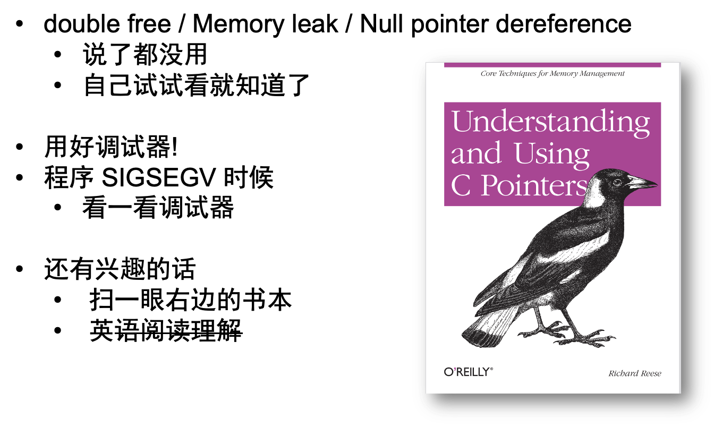
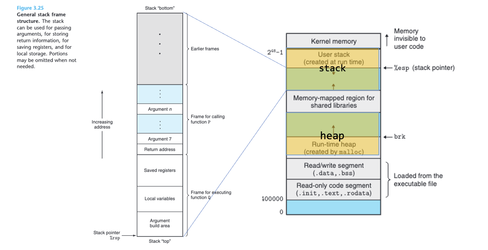
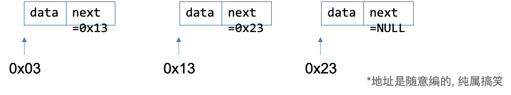
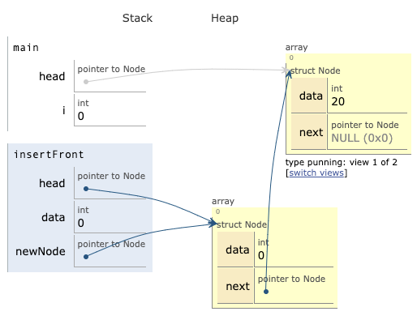

01. C 语言回顾
视频回放: 1B 链表
目标: 回顾 C 语言的一些可能会忘记的比较多的特性.
重新看一眼变量
[例子1] 实现猜数游戏. (review-c/numguess-gpt.c)
- C 程序的
=不是数学上的=. 更像是\(\leftarrow\)- 具有副作用, 影响其他变量
需要注意: 基本的控制语句等
[例子2] 实现交换两个变量的程序. (review-c/swap-w.c)
- 不使用函数的时候 totally fine
- 使用函数的时候: 函数是怎么传参的?
About variable.
- A variable has type, value, address
- A variable can be used as a lvalue or a rvalue
- lvalue = value on the left
- rvalue = value on the right
数组表示的时候, 二维数组只是为了方便起见画成二维的
- 实际上可以把二维的转化为一维的
与地址相关的操作: &(address of)、*(pointer deref)
获取变量的地址

指针解引用

数组与指针

更多内容请参看这里
- 上述内容已经足够使用了.
结构体struct
二进制内存单元

- 可以用
sizeof看一个类型占用多少byte(大格子).
结构体: 把各种东西放在一起
例子: 学生成绩管理系统
动态分配/释放内存
- 局部变量
- 随着函数返回销毁
- 全局变量
- 在函数里面声明 “全局变量” \(\rightarrow\) malloc
- 销毁 \(\rightarrow\) free
结构体也是一样
Traps and pitfalls...

事情的全貌:

实现链表
为什么需要?
- 数组: 声明之后定好长度
- 链表: 不用定长度, 想多长都可以
维护什么样的结构?
- 链表的第一个元素是谁?
- 任意一个链表元素, 它的下一号元素(
next)是谁?
使用数学归纳法, 就可以访问数据结构的所有元素.

下一步: 让计算机自动维护
a) 增加节点

- 啊呀! head随着插入过程跑走了!
- 方法:
- 套一个大的结构体(例如链表)
- 使用双重指针(Urggggh!)
b) 删除节点
- 找到, 删了就行了
- 删的时候: 前面的next粘过来
c) 遍历节点
依次顺下去就行了.
Aside: 用数组模拟指针
- 干脆开一个数组和计数器, "模拟内存地址".